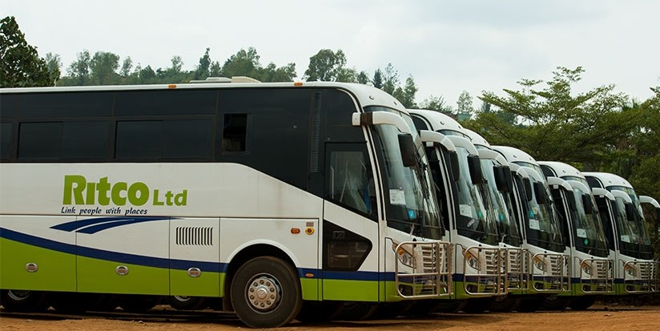

Smart Booking will assist travelers in locating buses nearly. This bus tracking app would rely on tracking device installed on the bus to provide real-time updates on its location and estimated time of arrival. This app will help them to plan their journeys more efficiently and reducing time waiting.Quick travel will help public or private buses to book the tickets and comments on how your journey is.
Ritco Ltd is a public-private partnership transport company established to improve public transport services in Rwanda and its nearby regions. The Ritco dream is to bring citizens living in rural areas out of isolation by facilitating their access to all parts of the country at affordable prices. Ritco Ltd started its activities in June 2016, under a transition period and was fully launched in February 2017. Ritco Ltd aims to improve public transport services all round Rwanda and also to provide quality services to its numerous customers. The company strives to serve as a role model for intercity public transport in the country using modern vehicles.
RITCO Bus have morning departures in all bus stations and some afternoon and evening departures in some bus stations and stops.The Ritco dream is to bring citizens living in rural areas out of isolation by facilitating their access to all parts of the country at affordable prices. Ritco bus tickets are very cheap and have a comfortable seats. It also have a place where we keep your bargage and you sit comfortable.